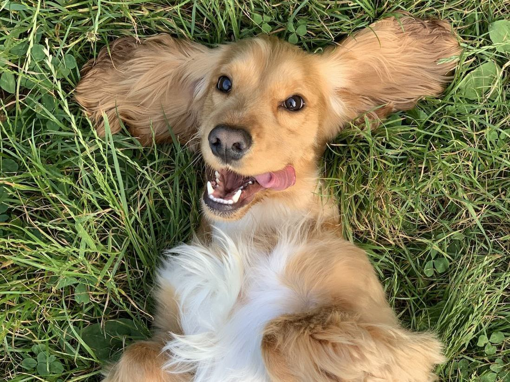
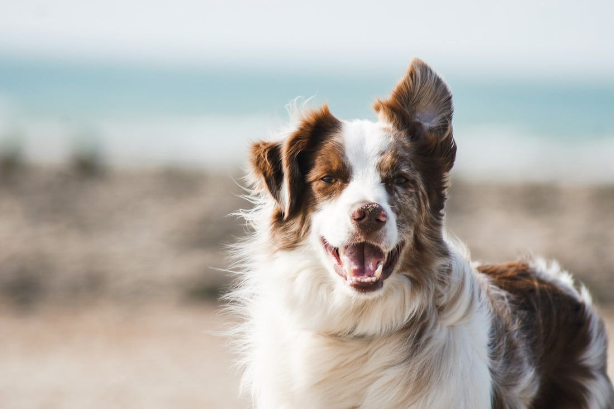
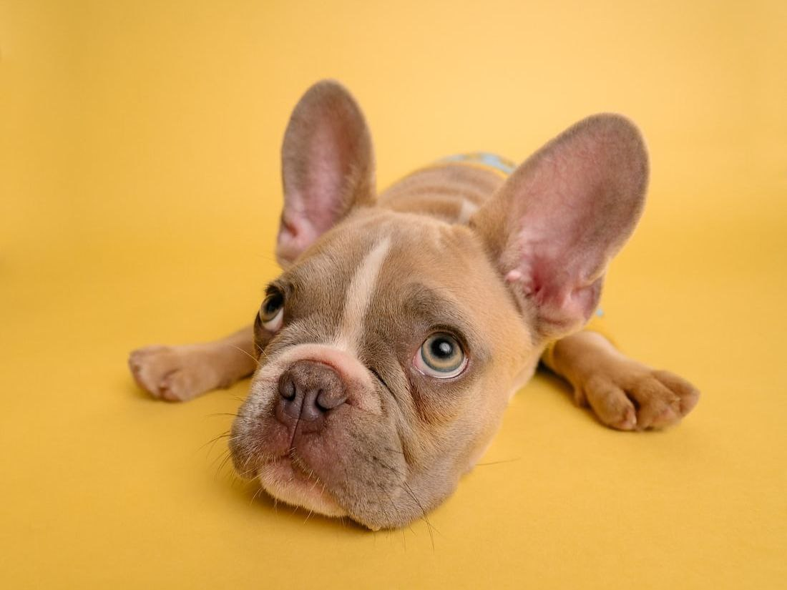

Общее описание
Собака – домашнее животное, одно из наиболее популярных (наряду с кошкой) «животных–компаньонов». Собаки известны своими способностями к обучению, любовью к игре, социальным поведением.
Выведены специальные породы собак, предназначенные для различных целей: охоты, собачьих боёв, тяги гужевого транспорта и др., а также просто декоративные породы (например, болонка, пудель). Собаки часто используются в научных целях, с их участием проводят биологические и биотехнические исследования и эксперименты.
Физические данные
Масса собаки зависит от её телосложения и количества жировых запасов. Максимальный зарегистрированный рост у собаки – 109 см в холке при весе 111 кг и длине 220 см. Известен случай, когда собака весила 123 кг, а позже её вес уменьшился до 72 кг.
При регулярной тренировке собаки удивительно сильны для своих размеров – некоторые способны переносить на спине тяжёлую поклажу, таскать за собой сани и другие большие грузы. Ездовым собакам часто приходится вшестером буксировать нарты массой в одну тонну по несколько часов подряд, фоксхаунды могут идти по следу 48 ч без передышки.
Форма и постановка хвоста
В результате селекционной работы у собак наблюдается огромное разнообразие форм и постановок хвоста. Например, у некоторых бульдоговидных пород он короткий и скрученный. У подружейных пород, различают два противоположных варианта его постановки. По клубным стандартам США эти собаки должны охотиться с высоко поднятым хвостом, тогда как правила принятые в Великобритании, требуют, чтобы в рабочем положении хвост был вытянут назад.
Органы чувств
У собак развито цветное зрение, хотя и в меньшей степени, чем у человека. У собак весь спектр сдвинут в сторону ультрафиолета. Поэтому они, как дальтоники, красный и оранжевый цвет не воспринимают адекватно. Зато собаки различают до 40 оттенков серого.
🔍 Мокрый нос у собак нужен для того, чтобы отлично различать запахи, он является своеобразным радаром.
🔍 Собаки в 100 000 раз лучше чувствуют запахи, чем люди.
🔍 Многие собаки если быстро едят и пьют, тоже могут икать, как люди.
🔍 Самой быстрой собакой является борзая.
🔍 Самая крупная собака родилась в 1981 году. Ее рост от кончика носа до кончика хвоста составляет около 2,5 м, а вес 155 кг.
🔍 Чем длиннее нос собаки, тем более эффективна ее внутренняя система охлаждения.
🔍 Средневековые собаки часто обвинялись в колдовстве, вместе со своими хозяевами.
🔍 В США имеется церковь для собак, которую построил владелец 5 лабрадоров. Они помогли вылечить хозяина от рака.